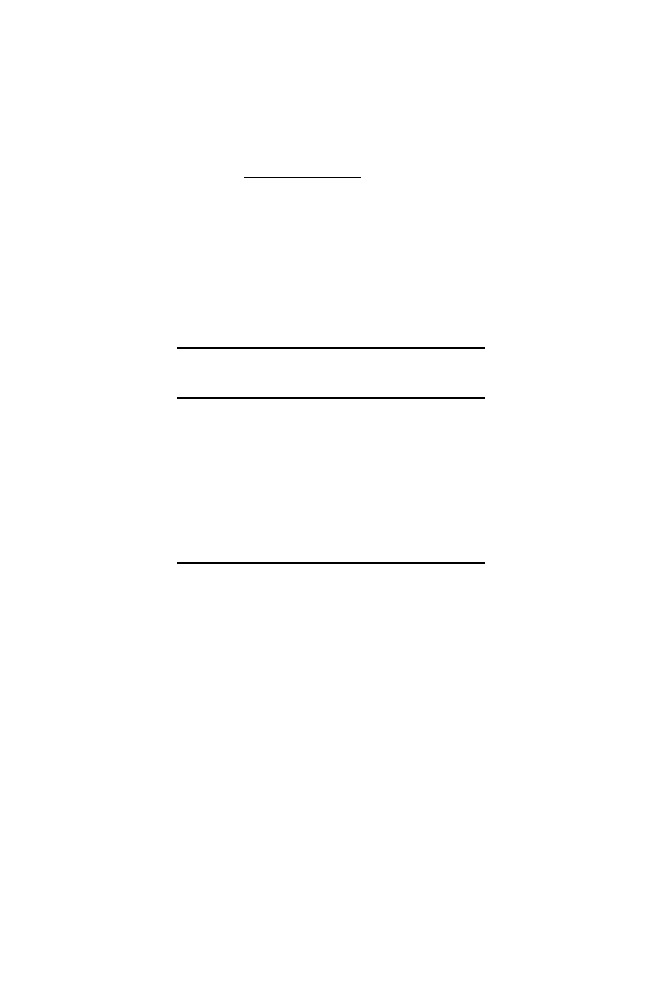

58
2 Words
It follows that among those codons making up the amino acid Phe, the ex-
pected proportion of
TTT
is
0
.
01489
0
.
01489 + 0
.
01537
= 0
.
492
.
Allowing for approximations in the base frequencies of
E. coli
, this is the value
given in the first row of the second column in Table 2.3.
Table 2.3.
Comparison of predicted and observed triplet frequencies in coding
sequences for a subset of genes and codons from
E. coli
. Figures in parentheses
below each gene class show the number of genes in that class. Data were taken from
M´
edigue et al. (1991).
Observed
Gene Class I Gene Class II
Codon Predicted
(502)
(191)
Phe
TTT
0.493
0.551
0.291
TTC
0.507
0.449
0.709
Ala
GCT
0.246
0.145
0.275
GCC
0.254
0.276
0.164
GCA
0.246
0.196
0.240
GCG
0.254
0.382
0.323
Asn
AAT
0.493
0.409
0.172
AAC
0.507
0.591
0.828
M´
edigue et al. (1991) clustered the different genes into three groups based
on such codon usage patterns, and they observed three clusters. For Phe
and Asn different usage patterns are observed for Gene Class I and Gene
Class II. For Gene Class II in particular, the observed codon frequencies differ
considerably from their predicted frequencies. When M´
edigue et al. checked
the gene annotations (names and functions), they found that Class II genes
were largely those such as ribosomal proteins or translation factors—genes
expressed at high levels—whereas Class I genes were mostly those that are
expressed at moderate levels.
A statistic that can describe each protein-coding gene for any given or-
ganism is the
codon adaptation index
, or CAI (Sharp and Li, 1987). This
statistic compares the distribution of codons actually used in a particular
protein with the preferred codons for highly expressed genes. (One might also
compare them to the preferred codons based on gene predictions for the whole
genome, but the CAI was devised prior to the availability of whole-genome
sequences.) Consider a sequence of amino acids
X
=
x
1
, x
2
, . . . , x
L
represent-
ing protein
X
, with
x
k
representing the amino acid residue corresponding to
codon
k
in the gene. We are interested in comparing the actual codon usage